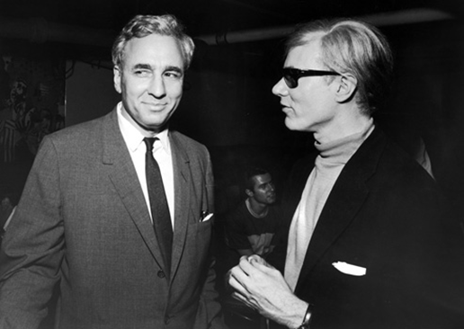

如果把时间都浪费在做决定上。与此同时所有事都在变，你的价值观也在变，甚至你的梦想也会改变。4岁时让你伤心或开心的事到了40岁毫无意义，而40岁时让你伤心或开心的事在20岁时会觉得不可理喻。总有一天你会无比怀念当下拥有的一切，但只是徒留感伤。
当A&P超市的继承人亨廷顿·哈特福德在巴哈马去世后，《华尔街日报》对他的报道是：一生为追求梦想散尽家财。 《纽约时报》报道称，哈特福德继承财产后，将大部分挥霍掉。他一直在追求自己的梦想，当企业家，赞助艺术，享受休闲生活。“他继承了大约9000万美元，挥霍了8000万美元。
哈特福德一辈子想做什么就做什么，以及他“散尽家财”和“亏掉8000万美元”，他的一生究竟是成功还是失败？成功到底意味着什么？
现在的文化，虽然人们常说“生不带来死不带去”，但是实际表现得好像财产可以跟人走。现在对人的评价，都是关心经济状况和财产，没人关心你人品如何。所以，《纽约时报》和《华尔街日报》都没有称赞他用财富追寻梦想，哈特福德自己也说，“对大多数美国人来说最大的错误就是亏钱，所以我就是霍瑞修·阿尔杰（Horatio Alger，从穷小子变成富翁，是美国梦的代名词——编者注）的反面教材。” 作者本人也有相似经历： 很早以前，我曾经做过一份不喜欢的工作。工作本身没问题，既安稳又愉快。我的工作表现也很好，但内心并没有想象中开心。工作之余我忙着做些真正喜欢的事，模拟、研究，还有写作。下班忙得越开心，我就越烦工作。 一天,我找个相熟的朋友抱怨起来，他提了个很关键的问题：“为什么不辞职专心做你想做的事？” 为什么一直不辞职？因为我满脑子都是“必须”。我得保证有稳定的收入。我喜欢拿着顶尖公司名片获得的尊重。我必须得有，不是我希望有。种种预期，种种信仰，还有种种养成的生活习惯，本身都没错，我只是在遵循自然规则。 但当我终于认清所有自我设限的“必须”，才仔细考虑了生活的桎梏对做决定的影响。第二天我正式辞职。我想要实现自己的梦想。 自那之后的25年里，生活的道路时而平坦时而起伏。我也问过自己很多次是否走错了路，但每次答案都是坚定的“没错”。我很清楚放弃了安稳的生活，换来了更加快乐的每一天，有时我也确实会怀念安稳。有些人可能就是愿意抛弃快乐只求安稳。但对我来说，快乐更重要。如果做的事让我不快乐，我就继续尝试。 我不想随随便便告诉别人，“尽管去做”。决定真正必须做的事，以及要不要追求真心想做的事可能是有风险的。亨廷顿·哈特福德9000万美元的身家意味着很多自由和保障，大部分普通人都达不到。不过，巨额财富也不会强迫他追寻自己的梦想。他还是得自己做决定。 缺钱可能是放弃梦想的原因。另一个原因则是总觉得以后有大把时间：想着明天再做。 我从亲身经历中发现，每当碰见难以决断的事，会格外喜欢拖延。我做艰难决定可能花上好几个月。两种方法可以帮我走出困境。第一种是重新思考决定本身。我以前努力想回答，却找不到答案的问题是“怎样才能获得想要的结果？”后来换成“我能达到最好的结果是什么？最差怎样？”一改思路立刻就能回答。哪怕答案我并不喜欢，但起码知道是真实的。 但真正让我改变思路的是一位40年老友的建议。他曾告诉我，“不要把时间浪费在做决定上。”他的话发自肺腑。因为那是我们最后一次说话，三天后他因白血病去世了。 如果把时间都浪费在做决定上。与此同时所有事都在变，你的价值观也在变，甚至你的梦想也会改变。4岁时让你伤心或开心的事到了40岁毫无意义，而40岁时让你伤心或开心的事在20岁时会觉得不可理喻。总有一天你会无比怀念当下拥有的一切，但只是徒留感伤。